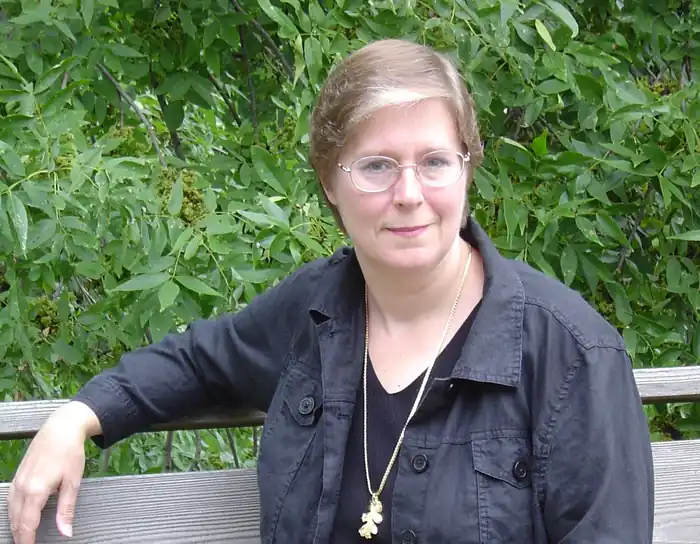
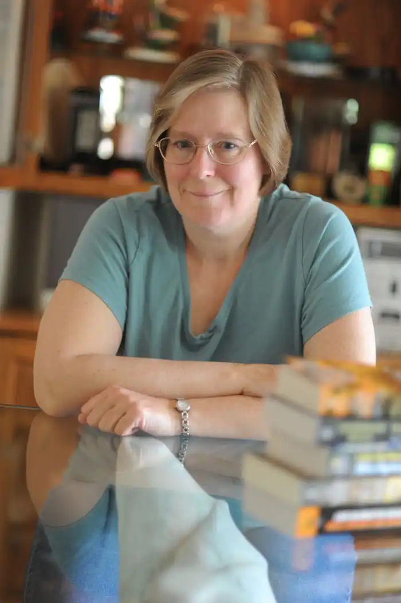
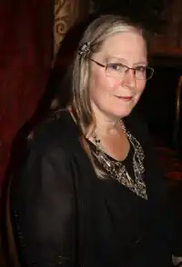

Лоїс Макмастер Буджолд (англ. Lois McMaster Bujold) — американська письменниця-фантаст. Широкої популярності набула завдяки циклу фантастичних творів про Майлза Форкосиганом, сина високопоставленого аристократа з мілітаризованої планети Барраяр (Сага про Форкосиганом). В останні роки також активно розвиває фентезійний цикл про королівстві Шаліон.
Нагороджена літературними преміями "Х'юго" тричі (за твори "У вільному падінні", "Гори скорботи", "Паладин душ") і "Х'юго" п'ять разів (за "Гори скорботи", "Гра Форов", "Барраяр", "Танець відображень "," Паладин душ ").
Народилася в Коламбусі, штат Огайо, в 1949. Закінчила Upper Arlington High School в 1967 і вчилася в Університеті Штату Огайо з 1968 по 1972. Мати двох дітей: Анни, яка народилася в 1979, і Пола, який народився в 1981.